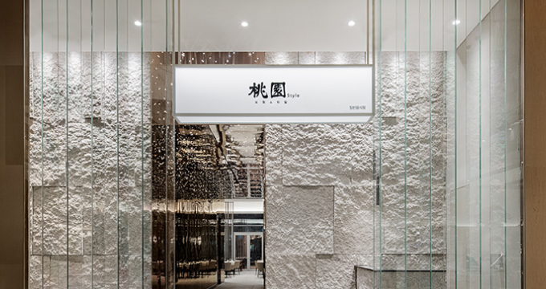
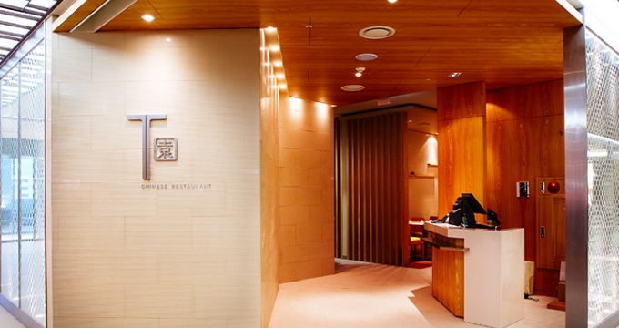
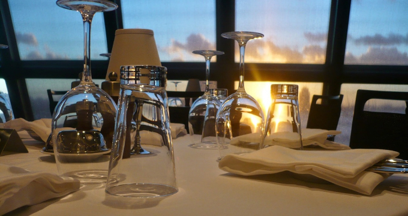

home
> 사업분야 > F&B
F & B
Connecting Food, Culture , and People
- 비전
- 오프라인과 온라인 플랫폼의 선순환 시너지를 창출하는 F&B Content Provider
- 슬로건
- 음식, 문화, 그리고 사람을 연결합니다.
브랜드 소개
- 도원스타일
-  도원스타일(桃園Style)은 더 플라자 호텔 중식당 '도원桃園'에서 출발한 프리미엄 다이닝 레스토랑입니다. 40여 년의 역사를 지닌 도원의 맛과 서비스를 백화점을 비롯해 보다 다양한 공간에서 선보이고 있습니다. 동양의 이상향인 무릉도원을 모티프 삼아 건강하고 이색적인 중식을 경험할 수 있으며, 현재 여의도 더현대 서울 등 현대백화점 6곳에 입점해 있습니다. 홈페이지 이동
- 티원
-  티원(T園) 역시 더 플라자 호텔 도원(桃園)의 정통성을 현대적으로 재해석한 중식 브랜드입니다. 도원의 영문 이니셜(T)과 정원을 일컫는 한자(園)를 결합해 만든 브랜드로, 연세대점을 비롯해 2개의 레스토랑을 운영하고 있으며, 특색있는 식재료와 결합하여 새로운 중식 카테고리를 만들어가고 있습니다. 홈페이지 이동
- 63레스토랑
-  한강과 서울 중심부가 한눈에 내려다보이는 63빌딩 레스토랑을 운영하고 있습니다. 유럽풍 정원을 표방하는 레스토랑 '워킹온더클라우드(Walking On The Cloud)', 프라이빗 프렌치 레스토랑 '터치더스카이(Touch The Sky)', 스시 장인이 선사하는 최고급 스시바 '슈치쿠(SHUCHIKU)', 정통 중식 레스토랑 '백리향(BAEK NI HYANG)'은 모두 63빌딩 57~59층에 위치합니다. 63 레스토랑은 국제대회에서 수상한 스타 셰프가 주도하는 파인다이닝으로, 고객의 라이프 사이클에 맞춰 특별한 외식 경험을 제공하고 있습니다. 홈페이지 이동